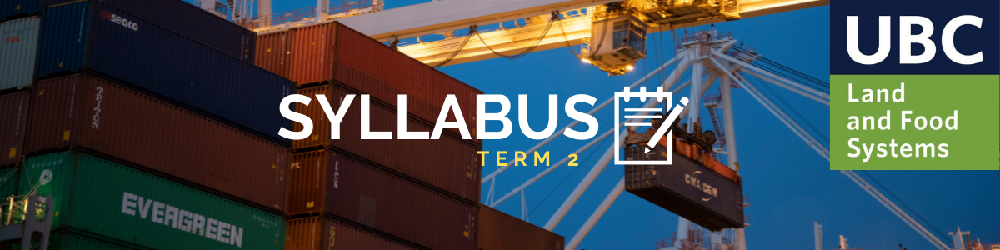

FRE 420: The Economics of Trade and the Environment
Instructor Contact
|
Additional Information
|
|
Instructor: Dr. Carol McAusland
- Email: carol.mcausland@ubc.ca (for setting extra appointments only)
- Web Page:GO!
- Synchronous Lectures: T - Th 3:30-4:50 pm
- Classroom: MCML 158
- Office Hours: M 1:30 to 2:30pm | W 2:30 to 3:30pm | By appointment
|
Grader: Bianca Cecato
|
Please download the Syllabus in PDF Format here. It includes detailed information about this class. This page only highlights the most important features of the official syllabus.
Structure of the Class:
- This is a synchronous class. Once permitted, the course will take place in the originally scheduled classroom. Until then, the class will be held online via Zoom. While attempts will be made to record live-lectures, these recordings are meant to be supplementary and not a substitute for attending live lectures. In the event that a recording fails, a new recording will not be made.
- This term we will be using Piazza for class discussion. The system is highly catered to getting you help fast and efficiently from classmates and the teaching team. Rather than emailing questions to the teaching staff, we encourage you to post your questions on Piazza.
- For office hours please sign up using Canvas Scheduler. How do I sign up? Review the instructions here.
Important Deadlines:
Date
|
Details
|
January 25
|
Essay Question Due
|
| February 1 |
Essay Question - Approval Deadline
|
| February 3 |
Assignment 1 Due |
February 10
|
Annotated Bibliography Due |
| March 8 |
Essay Due |
| March 10 |
Assignment 2 Due |
| March 15 |
Slide Deck Due |
| March 17 - April 7 |
Presentations (meetings shared with lectures) |
| March 31 |
Assignment 3 Due |
| April 14 |
Assignment 4 Due |
Turnitin 2022:
Turnitin will be used to check for work originality. Please sign up using the following information:
Class ID: ******** | Key: *********